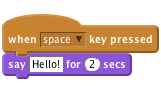
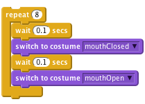
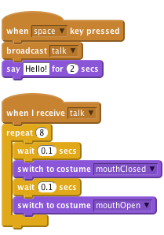
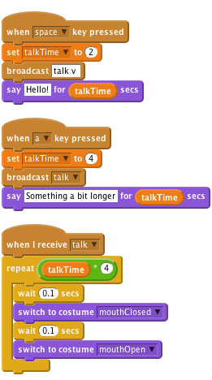
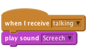

Scratch Card - Mouths and talking
Level 4
To make your monster talk, you can just use the
Say sprite.

To make it a bit more impressive, you could
make the monsters mouth open and close
whilst it is talking. To do this, edit the sprite
that contains the mouth - create a new
costume that has a closed mouth.
By switching between the two, you can animate
the mouth opening and closing.

To hook the two up, have the block that does the say broadcast a message that the other block can react to.

talkTime the monster
(Notice how we multiply talkTime by 4 to
make sure the loop repeats enough
times?)

Why not try adding sounds to other events, you could use a spooky hovering
sound for a ghost drifting around the screen! If you have a microphone on
your computer you can even record your own sounds, surprise your classmates
by recording a loud monster ROOOAAAAARRRRR!!!